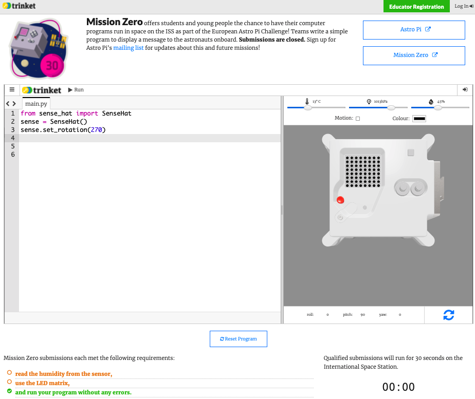

Soumettre ton programme
Ton code doit respecter quelques règles pour que tu puisses le soumettre et le faire exécuter dans la Station Spatiale Internationale. Si ton code les respecte, les règles situées en bas de l'émulateur Sense HAT s'allumeront en vert lorsque tu exécuteras le programme.

- Mesure l'humidité.
- Allume les LED.
- Vérifie que ton code s'exécute jusqu'au bout sans erreur. Tu ne dois pas inclure de boucles
while Truedans ton code car cela fera exécuter le code en continu et l'empêchera de se terminer. - Teste ton code avec quelques paramètres d'humidité différents (en utilisant le curseur) pour t'assurer qu'il s'exécutera toujours correctement.
Assure-toi également que les critères suivants sont satisfaits :
- Assure-toi que ton message pour les astronautes ne dure pas plus de 30 secondes, car c'est la durée d'exécution de ton code dans l'ISS
- Évite d'utiliser des méthodes nécessitant une saisie de donnée
- Importe uniquement les modules
sense_hat,time, etrandom - Assure-toi de ne pas inclure de juron
Une fois que toutes les règles sont passées au vert, tu es prêt à faire ta soumission.
Saisis le code de ta classe dans la case en bas - ton enseignant ou ton mentor te dira quel est ton code.
Les notes destinées aux enseignants ou aux mentors se trouvent dans l'étape Introduction.
Le nom de ton enseignant va s'afficher. Si c'est le bon nom, clique sur le bouton vert Continue to form (Continuer vers le formulaire).

Donne le nom de ton équipe et les noms des membres de l'équipe. Ils seront imprimés sur le certificat une fois que ton code sera exécuté dans l'espace, alors assure-toi de les épeler correctement !
Appuie sur le bouton Submit (Soumettre) pour entrer ton code. Ton enseignant ou ton mentor recevra un e-mail de confirmation pour ton inscription.
Si tu le souhaites, tu peux partager le lien vers ton code sur les réseaux sociaux pour dire aux gens que le code que tu as écrit sera exécuté dans l'espace !